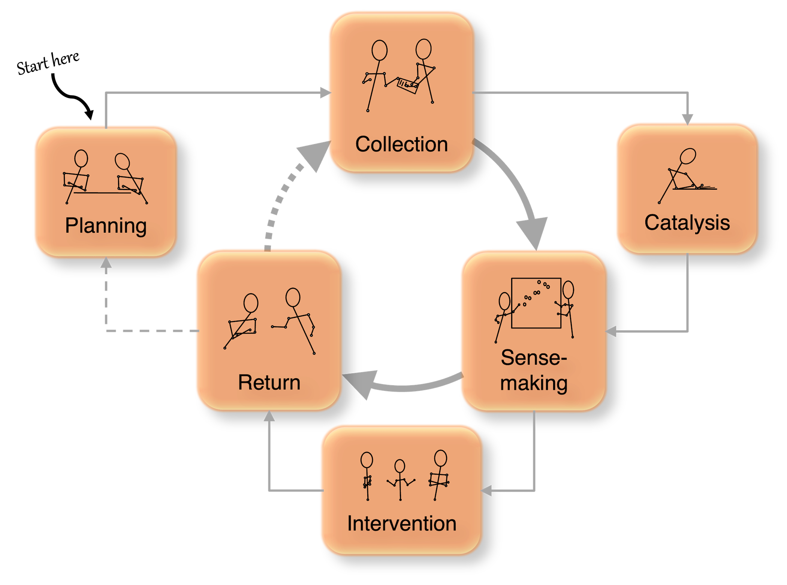

NarraFirma home page

The NarraFirma home page is the main page of your project.
The diagram describes a typical Participatory Narrative Inquiry (PNI) project,
with its three essential phases:
And three optional phases:
From NarraFirma's home page, you can navigate to each phase of your project by clicking on the labeled boxes.
(The boxes look like buttons, but they are actually just areas on an image map, so I don't like to call them buttons.)
You can return to NarraFirma's home page at any time; just click the Home link at the top of any NarraFirma page.
You can do the same thing in this help system. In the diagram on the right-hand side of this page,
click on the labeled boxes to get to the help pages that describe each part of NarraFirma.
(Or click the links above.)
You can also get help on the Project administration parts of NarraFirma.
Click here for Tips on Using NarraFirma
Frequently-asked questions
What is Participatory Narrative Inquiry?
Participatory Narrative Inquiry is a form of Participatory Action Research in which groups of
people share and work with their stories of personal experiences to understand each other
and to make collective sense of complex issues and situations. PNI focuses on the profound
consideration of values, beliefs, feelings, and perspectives through the recounting and
interpretation of lived experience
Where can I read more about participatory narrative inquiry?
The NarraFirma™ software is a companion to the book
Working with Stories in Your Community or Organization: Participatory Narrative Inquiry
(WWS) by Cynthia F. Kurtz.
WWS describes the PNI process in full, so you can do PNI projects yourself.
Cynthia wanted to write NarraFirma because readers of WWS kept asking her
to help them get started doing PNI.
NarraFirma follows the book's instructions step by step,
incorporating many of its questions and suggestions.
You can also read Working with Stories Simplified, the shorter version of WWS.
Do I have to read the book to use the software?
Not at all, though of course it would help. If you have not yet read Working with Stories (or Simplified),
pay special attention to this help system. It includes some excerpts from the books
that explain various terms and concepts in the software.
How does NarraFirma help with PNI projects?
NarraFirma is designed to support people using the PNI approach step-by-step as described in the WWS book.
You can use NarraFirma to plan your Participatory Narrative Inquiry (PNI) project, decide how you will collect stories, write questions about stories,
plan group story sessions (and record what went on in them), collect or enter stories (and answers to questions),
look at patterns in collected stories and answers, build catalysis reports describing the patterns for use in sensemaking,
plan sensemaking sessions (and record what went on in them), plan interventions (and record what went on in them),
gather project feedback, reflect on the project, present the project to others, and preserve what you learned so you can use it on the next project.
Who created NarraFirma?
Cynthia Kurtz designed the overall NarraFirma application and its user interface.
Her husband Paul Fernhout designed the supporting architecture for data storage and retrieval.
In the years after NarraFirma's initial release, Cynthia has maintained and improved its usability and features.
How can I get help with NarraFirma?
If you want some help, you can contact Cynthia for consulting or training on PNI projects and/or NarraFirma.
When does NarraFirma save my data? Where is the Save button?
Any changes you make to any field in a project are normally saved immediately to the server and are relayed to other connected users of the same project.
However, if you are viewing a project in "Read only" mode, changes are only saved locally and will be lost when you reload the page or close your browser.
You can back up and restore a project (including changes made in "Read only" mode) using the "Import/Export" page in the Administration section.
Where do I put the stories?
On the NarraFirma home page, click the Collection thing-that-looks-like-a-button.
In that section of NarraFirma,
you can collect stories over the internet or
enter them by hand (from interviews or group story sessions).
You'll need to create a story form first.
Story forms include questions that elicit stories,
questions about stories,
and questions about people.
NarraFirma supports mixed-methods research,
which means that you'll (probably) be looking both at the stories and at (counts of) answers to questions about them.
Can I search for text in stories?
Yes. Go to the "Review incoming stories" page, look at all of your collected stories, and use your browser to search for text in the table.
How do I delete stories?
See the help for the Review incoming stories page for an explanation
of how stories are saved in NarraFirma and how you can ignore or remove them.
Does NarraFirma work only with story data?
NarraFirma was designed to be used with stories. The stories can be brief anecdotes — in fact, that's usually the case. But in order for NarraFirma to work well for you, you do need to ask people to tell you what happened to them. If you don't have stories, you can use a variety of other software to collect and analyze data.
I have more general questions about NarraFirma and its uses. (Or, I found a bug in NarraFirma. Or, I have a suggestion about NarraFirma.)
Please visit the NarraFirma web site, which has a general
support page, with a link to our bug-reporting and question-asking facility,
plus a frequently-asked questions list (about the software in general).